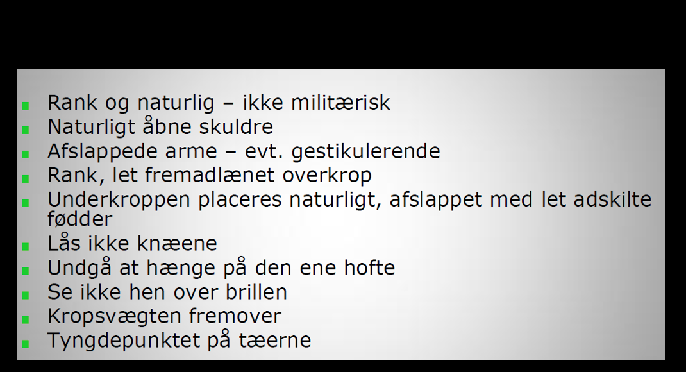
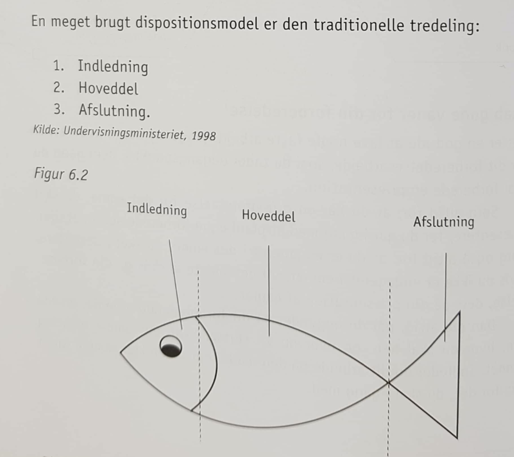
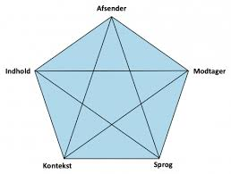

Kvantitativ og kvalitativ empiri
Kvantitative metoder bliver ofte forbundet med klassiske markedsundersøgelser og trækker på en marketingtærking i det samfundsvidenskabelige paradigme, som har en tilgang til kommunikationssitautionen som en transmission. Man kan anvende kvantitative metoder til at undersøge, fx hvor mange mennesker der gør noget bestemt. Det kan være at de besøger en hjemmeside eller hvor ofte det gør det, men et spørgeskema rummer også masser af muligheder for at spørge ind til, hvad brugeren synes om det personen læser om.
Et systematisk afsæt af spørgeskemaundersøgelser.
At arbejde ud fra en klar snævret problemstilling, som man kan besvare, derfor er det afgørende at få nogle begreber at i spil. Derudover skal man være marsom med at bruge generelle begreber som er vanskeligt at lade sig difinere fx kultur. Man skal have en klar idé om på hvad disse svar på de stillede spørgsmål skal bruges til, for ellers kan de have ingen berittigheder.
Kvalitative metoder.
Med kvalitative metoder er anvendelige i forbindelse med test, og som kan blive anvendt, det kan fx hvis man planlægger og skal finde ud af om et problem og hvordan man skal løse det. Derfor undersøger man med kvalitative metoder over hvorfor mennesker gør, som de gør. Det er meget vigtigt for de kvalitative metoder at gøre overvejelser om at opbevarer ens oplevelser og at man kan fortolke dem og dele dem med andre.
Kvantitativ interview.
Et interview er som regel blevet planlagt, og hvordan på forhånd har gjort sig nogle tanker om, da det kan opstå hurtigt og spontant. Derudover er et kvaltativt interview kan mere eller mindre være struktureret og ikke-struktureret, det er vigtigt at intervieweren har gjort sig tanker om hvordan interviewet skal være. For at få et godt interview kan man bruge et struktur i syv trin, efter anbefaling af (Steiner Kvales)
(1)Tematisering: Formålet er at det beskriver emnet og og hvad formålet er med interviewet.
(2)Design: Hvad der udgør metoden for at få svar på spørgsmålene, som man fået fra det valgte tema.
(3)Interview: Det er vigtigt at under interviewet at man eksekverer ens plan, men at man samtidig giver plads til at det er i nuet.
(4)Transskribering: At man skriver interviewerne for at få et overblik over dem, så de kan blive henvist i analysen.
(5)Analyse: Det her hvor man fortolker de indsamlede infomationer, det betyder ogsp at man finder svarene på de spørgsmål man er blevet stillet i interviewet.
(6)Verificering: Her konkludere man så analysen til dens generaliserbarhed, reliabilitet og validitet. Her redegør man så for resultaterne og skal forholde sig til på det der er blevet undersøgt.
(7)Rapportere: Dette er så formidlingen af undersøgelsens helhed og at man har fået struktur på ens resultater.
Efter kvalitativ interview, kan tage Alvessons kritiske fortolknings tilgang.
Når man går i systematisk i gang, opstår der så en automatisk behov, for at man kan holde sig kritisk til det sagte. Fx den svenske økonomiprofesser Alvesson mener, at et interview er forurenet. Det kan være efter flere forskellige faktorer og til besindighed i fortolkningen.
Her bliver der præsenteret otte metaforer som interviewpersonen kan tage udsagn fra.
(1)Kontekstafhængighed, har fokus på de valg interviewdeltagerne træffer i forhold til interviewsituationen, på baggrund af deres egen dagsorden. Det er er med til at påvirke interviewet og konteksten, kommer an på interviewdeltagernes køn, alder professionelle baggrund, fremtoning osv. (2) Meningskonstruktør, dette er når den interviewese vil agere meningskonstruerende ud fra ens forståelse af hvad interviewsituationen går ud på, og kan dermed tale ud fra ens egne formodninger. Der er ikke nødvendigvis en samklang med den egentlige formål.
(3) Identitetsarbejde, her er det igennem interviewet der er med til at forme og skabe deltagernes identitet, såvel eksplicit og implicit, dette har en indflydelse på den gensidige respons, og her dermed helheden på interviewet.
Dette er fortsættelse, og hermed starter punkt fire af Alvessons kritiske fortolkningstilgang.
(4) Kulturelle skemaer, her bliver den interviewet præget af af samfunds- og organisationskultur, personen er i. Det vil sige at fordomme, værdier, normer m.m sætter en præg på det endelige interviewresultat, er man selv i stand til at indregne en kulturpåvirkning. Ja, eftersom mange finder andre kulture interessante, derfor vil de gerne lærer noget mere om det, og måske blande forskellige kulturtyper sammen. (5) Idealisering og udtrykskontrol, her antages der om den interviewede vil forsøge at gøre et godtn indtryk som muligt, han/hun vil søge at besvare en form for facade, både hvad der angår en selv, men også den organisaton personen er en del af. Derfor vil man blive nødt til at holde igen med dårlige historier og fokusere på at skabe en god historie og på den måde at præsentere sig selv godt.
(6) Politiske handlinger, her vil den interviwede have interesse i at fremme sine egene interesser og følge sine egne mål. Den interviewede vil således agere ud fra interviewet og forsvare den sociale gruppe og den organisation man er en del af. (7) Lokal meningsproduktion, her er det sproget som ikke kun giver information om et bestemt emne, men konstruerer et subjektiv verdensbillede i interviewsituationen. Her vil sproget blive set som både konstituerende for og konstetueret af situation og de involverede parter. Kontekten har en aførende betydning og derfor kan teksten nogengange synes at være uforståelig, når det bliver nedskrevet. (8) Sprogspil, her er det både intervieweren og den tilstede værende interviewede være præget af deres eget verdensbillede, og den kultur de er en del af, det vil også være præget af interviewsituationen.
Præsentationsteknik
For at kunne undgå med at lave fejl når man skal præsentere noget, så er det en god hjælp at man følger nogle modeller, så godt som muligt.

Dette billede beskriver en god måde for at kunne præsnetere noget brugbart, derfor er det en god idé at følge disse ting der står.
Som multimediedesigner, så vil man på et tidspunkt skulle præsentere ens resultater og løsninger for andre, det kan fx være et mundligt oplæg for sin projektgruppe eller i undervisningen på den uddannelse man går på. Ofte vil ens mundtlige oplæg kun udgøre, kun noget af delen fra ens præsentation.
Når man skal lave en mundtlig præsentation, så skal man på forhånd have overvejet hvem der har ordet og derefter begynder sit oplæg. Det er alt afgørende for ens succes, at det man siger er gennemtænkt og hvad formålet er for at få målgruppen til at lytte til en. En gang i mellem kan man på forhånd vide hvem man skal fremlægge for, hvilket kan give en fordel med at indrage sin viden og dermed kan planlægge om præsentationen skal være veldokumenteret eller være mere underholdende fremstilling.
Inden man går igang med sin præsentation, så er det vigtigt at skabe en dialog. Når man har fået etableret en god kontakt til tilhørerne, så bliver resten meget nemmere. Her skal dialogen således forståes den kontakt der er mellem afsender og modtager, man kan også afslæse tilhørerne om de viser respons og at man har deres opmærksomhed, det kan se fx om de kigger væk eller kigger på den der præsentere.
En god måde at få opmærksomhed på er at man metakommunikere som fx kan være at man siger jeg er klar, når i er klar, en anden måde at sige det på uden at sige et ord er ved at stå stille og kigge på tilhørerne. Men desvære så er der mange der synes at det er i orden at sidde på sin telefon eller være i gang med noget helt andet end at have opmærksomhed på den der er ved at at præsentere.
Her er en anden model på hvordan man kan lave en god præsentation.

I denne model er der tre dele, den første er begyndelsen, dette er indlednig til at vække tilhørernes interesse og give en stikordsform om ens dialog. Det næste er midten, her er det så at man folder indholdet ud og demostrerer ens viden og kundskaber. Den sidste del er slutningen, her pointer ens afrunding, at du slutter hvor man startede, med sin præsentation.
Her er et eksempel på hvordan man kan lave præsentationteknik, denne model går ud på at man går i dybden med hvordan ens præsentation skal være.

Inden for præsentationsteknik, så er det en god idé at vide hvem ens målgruppe er. Derudover skal man også finde ud af om hvad de vil vide om ens, hvilke spørgsmål de stiller, desuden skal man også forstille om man gider at høre på den der er i gang med at præsnetere.
Der forskel på om man er til eksamen, da rolle- og magtfordelingen allerede er blive givet på forhånd eller at lave en præsentation over for en kunde, som man har udviklet en løsning til. I begge situationer er det vigtigt at huske at det man siger i centrum, at jo mere førende i dialogen des bedre.
En god præsnetation er lig med at man har styr på retorikken. Der er fem faser som at gode til at kan får overblik over hvordan man vil præsentere sin dialog, så den ikke bliver kedelig at hører på.
(1) Inventio, er her for stoffet findes og forberedes, man skal så finde de delelementer som man får brug for, som fx kan være billeder, teorier, arguemter osv. Man skal også finde ud af præsnetationen skaæ handler om og hvad formålet er. (2) Disposito, her disponerer og organiserer oplægget, hvilken rækkefølge er bedst, at få delene til være logiske efter hinanden. (3) Elocutio, er hvor man giver talen en sprogelig udforming, og at man benytter sig af appelformerne pathos, logos og ethos. (4) Memoria, at man skal lære sin tale udenad og øve sig på hvordan fremtrædelsen skal være. Til sidst er der (5) Actio, som er selve fremførelsen af præsentationen.